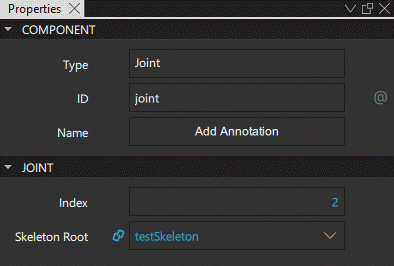

Skeletal Animation
Skeletal animation is a technique used in computer animation. In skeletal animation, a character is represented in the form of a surface representation (skin or mesh), and a skeleton. This portrays how the character can move, inspired by how a physical skeleton works for vertebrates. The "bones" of the skeleton are represented by a hierarchy of joint nodes.
The normal workflow is to use an external content creation tool to define the skeleton and the skin (this is sometimes also referred to as rigging), and import them to Qt Design Studio. You can then create skeletal animations using Skeleton and Joint components available in Components > Qt Quick 3D > Qt Quick 3D.
Skeleton
A Skeleton component determines a skeletal animation hierarchy and defines how a model can be animated using skeletal animation. It contains a hierarchy of Joint nodes. Each joint can be transformed for a skinning animation.
Joint
A Joint defines a node in a skeletal animation hierarchy and functions similarly to joints between bones in a human skeleton. It is a transformable node that must be contained inside a Skeleton component.
Define properties for Joint components in Properties > Joint.

Use the Index property to define the index of this joint. This index value is used in the Joint semantic custom geometry attribute.
Note: The Index values must be unique within the same Skeleton.
Use the Skeleton root property to define the Skeleton that contains the Joint. Do note that all the Joints in the Skeleton must have the same Skeleton root for the animation to work properly.